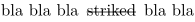
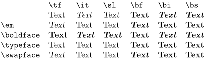

Contents
Font switches at the beginning of a paragraph
Placing a font switch at the beginning of a paragraph can sometimes generate unexpected side-effects. This can be avoided by forcing horizontal mode before any font change:
\dontleavehmode{\bf Warning!} Care must be taken when a font switch is used at the beginning of a paragraph.\par
Overstrike and microtypography
The canonical way is \overstrike{text}. However, it you're using microtypography with \setupalign[hz,hanging] expect the rule to be placed over the character (with the Latin Modern fonts you should not have this problem, experienced with Linux Libertine and mkiv). This is not what is expected. The workaround is to put the overstriked text in a \inframed[frame=off]{}.
E.g.
bla bla bla \inframed[frame=off]{\overstrike{striked}} bla bla
- 
Disabling mycrotypography also works, but probably not desiderable.
\setupalign[nothanging,nohz]
\strikeout{text}
\setupalign[hanging,hz]
Latin Modern and \em
ConTeXt uses the Latin Modern fonts by default; these fonts look similar to the original Computer Modern fonts, but have a much larger character repertoire. As it happens, in the Latin Modern (and Computer Modern) fonts, the slanted font does not stand out from the upright font enough for some tastes; so, many people prefer to use the italic font for emphasis. To do that use
\definebodyfontenvironment[default][em=italic]
NOTE: For Opentype fonts, italic correction needs to be set using
\definefontfeature[default][default][itlc=yes] |
Mnemonic font switches \typeface , \boldface , \swapface and interaction with font styles
You may also use \typeface for normal,\boldface for bold and \swapface for slanted/italic.
| TODO: Link with \em? (See: To-Do List) |
-
\starttabulate[|l|f{\tf}l|f{\it}l|f{\sl}l|f{\bf}l|f{\bi}l|f{\bs}l|] \NC \NC \tttf \tex{tf} \NC \tttf \tex{it} \NC \tttf \tex{sl} \NC \tttf \tex{bf} \NC \tttf \tex{bi} \NC \tttf \tex{bs} \NC\NR \NC \NC Text \NC Text \NC Text \NC Text \NC Text \NC Text \NC\NR \NC \tex{em} \NC \em Text \NC \em Text \NC \em Text \NC \em Text \NC \em Text \NC \em Text \NC\NR \NC \tex{boldface} \NC \boldface Text \NC \boldface Text \NC \boldface Text \NC \boldface Text \NC \boldface Text \NC \boldface Text \NC\NR \NC \tex{typeface} \NC \typeface Text \NC \typeface Text \NC \typeface Text \NC \typeface Text \NC \typeface Text \NC \typeface Text \NC\NR \NC \tex{swapface} \NC \swapface Text \NC \swapface Text \NC \swapface Text \NC \swapface Text \NC \swapface Text \NC \swapface Text \NC\NR \stoptabulate
- 
Font Coloring
From Jano Kul February 2021, and Hraban July 2022
For detailed explanation of font goodies read fonts-mkiv.pdf manual. Here are some examples of font goodies usage.
This a simplified example of goodies-002.tex from Test suite (goodie file of the test is demo.lfg in the distribution).
Create a goodie file *.lfg, for example:
-- name the file fontcolor-greek.lfg return { name = "FontColor", comment = "An example of font coloring.", colorschemes = { default = { [1] = { force = true, list = { "0x01F40:0x01FD6", "0x0590:0x05FF", } }, }, }, }
where "0x0370:0x03FF" and "0x01F40:0x01FD6" are unicode blocks for greek and antient greek. You can also list single character or the adobename of the character from char-def.lua.
\definefontfeature [demo-colored] [goodies=fontcolor-greek, colorscheme=default, featureset=default] \setupbodyfont[dejavu] \startTEXpage[offset=5mm] \setfontfeature{demo-colored}% \start\resetfontcolorscheme from ὀρφανῖος, thus\stop\par \start\setfontcolorscheme [1] from ὀρφανῖος, thus\stop\par \start\setfontcolorscheme [2] from ὀρφανῖος, thus\stop\par \start\setfontcolorscheme [3] from ὀρφανῖος, thus\stop\par \start\resetfontcolorscheme from ὀρφανῖος, thus\stop\par \stopTEXpage